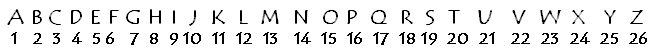
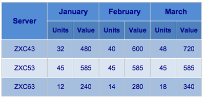
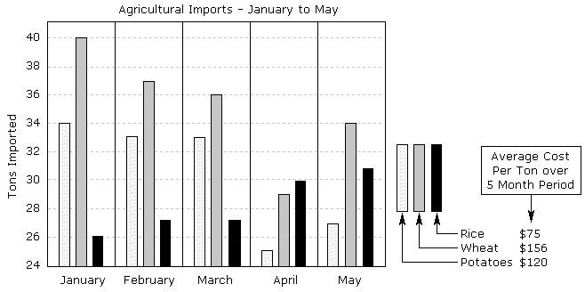

The first type of numerical ability test covers basic arithmetic (addition, subtraction multiplication and division), number sequences and simple mathematics (percentages, powers, fractions, etc). This type of test can be categorized as a speed test and is used to determine your basic numeracy. Obviously you will not be allowed to use a calculator.
Arithmetic Questions
| 1. 139 + 235 = | |||||
| A) 372 | B) 374 | C) 376 | D) 437 | ||
| 2. 139 - 235 = | |||||
| A) -69 | B) 96 | C) 98 | D) -96 | ||
| 3. 5 x 16 = | |||||
| A) 80 | B) 86 | C) 88 | D) 78 | ||
| 4. 45 / 9 = | |||||
| A) 4.5 | B) 4 | C) 5 | D) 6 | ||
| 5. 15% of 300 = | |||||
| A)20 | B) 45 | C) 40 | D) 35 | ||
| 6. ½ + ¼ x 3/4 = | |||||
| A)3/8 | B) 13/8 | C) 9/16 | D) 3/4 | ||
Answers
1. B
2. D
3. A
4. C
5. B
6. C
These questions are directly applicable to many administrative and clerical jobs but can also appear as a component of graduate and managerial tests. The speed at which you can answer these questions is the critical measure, as most people could achieve a very high score given unlimited time in which to answer. You can therefore expect 25-35 questions in 20-30 minutes.
Number Sequences
These questions require you to find the missing number in a sequence of numbers. This missing number may be at the beginning or middle but is usually at the end.
7. Find the next number in the series
| 4 | 8 | 16 | 32 | --- | |
| A) 48 | B) 64 | C) 40 | D) 46 |
8. Find the next number in the series
| 4 | 8 | 12 | 20 | --- | |
| A) 32 | B) 34 | C) 36 | D) 38 |
9. Find the missing number in the series
| 54 | 49 | --- | 39 | 34 | |
| A) 47 | B) 44 | C) 45 | D) 46 |
10. Find the first number in the series
| --- | 19 | 23 | 29 | 31 | |
| A) 12 | B) 15 | C) 16 | D) 17 |
These number sequences can be quite simple like the examples above. However, you
will often see more complex questions where it is the interval between the numbers that
is the key to the sequence
11. Find the next number in the series
| 3 | 6 | 11 | 18 | --- | |
| A) 30 | B) 22 | C) 27 | D) 29 |
12. Find the next number in the series
| 48 | 46 | 42 | 38 | --- | |
| A) 32 | B) 30 | C) 33 | D) 34 |
These number sequences usually consist of four visible numbers plus one missing number. This is because the test designer needs to produce a sequence into which only one number will fit. The need to avoid any ambiguity means that if the number sequence relies on a more complex pattern then there will need to be more visible numbers. For example;
13. Find the missing number in the series.
| 4 | 3 | 5 | 9 | 12 | 17 | --- | |
| A) 32 | B) 30 | C) 24 | D) 26 | ||||
14. Find the missing numbers in the series
| 5 | 6 | 7 | 8 | 10 | 11 | 14 | --- | ---- | |
| A) 19 | B) 17 | C) 15 | D) 16 | ||||||
15. Find the missing numbers in the series
| 1 | -- | 4 | 7 | 7 | 8 | 10 | 9 | ---- | |
| A) 6 | B) 3 | C) 11 | D) 13 | ||||||
Answers
7. B – The numbers double each time
8. A – Each number is the sum of the previous two numbers
9. B – The numbers decrease by 5 each time
10. D – The numbers are primes (divisible only by 1 and
themselves)
11. C – The interval, beginning with 3, increases by 2 each time
12. B – The interval, beginning with 2, increases by 2 and is
subtracted each time
13. D – Each number is the sum of the previous and the number 3
places to the left
14. C A – There are 2 simple interleaved sequences 5,7,10,14,19
and 6,8,11,15
15. A D – There are 2 simple interleaved sequences 1,4,7,10,13 and
6,7,8,9
To solve these number sequence questions efficiently, you should first check the relationship between the numbers themselves looking for some simple arithmetic relationship. Then look at the intervals between the numbers and see if there is a relationship there. If not, and particularly if there are more than 4 numbers visible, then there may be two number sequences interleaved.
You will occasionally find multiplication, division, or powers used in these sequences, but test designers tend to avoid them as these operations soon lead to large numbers which are difficult to work out without a calculator.
Letters of the Alphabet as Numbers
Another type of sequence question which appears in these tests involves the substitution of letters of the alphabet for numbers. For example A=1, B=2 etc. It may seem strange to consider these as numerical reasoning questions but they actually work in the same way once you have changed them back into numbers.
16. Find the next letter in the series
| B | E | H | K | --- | |
| i) L | ii) M | iii) N | iv) O |
17. Find the next letter in the series
| A | Z | B | Y | --- | |
| i) C | ii) X | iii) D | iv) Y |
18. Find the next letter in the series
| T | V | X | Z | --- | |
| i) Y | ii) B | iii) A | iv) W |
Answers
16. iii – There are two letters missing between each one, so N is
next
17. i – There are 2 interleaved sequences A,B,C and Z,Y, so C is
next
18. ii – Miss a letter each time and ‘loop’ back, so B is next
Because arithmetic operations cannot be performed on letters there is less room for ambiguity in these questions. This means that interleaved sequences can be used with fewer visible letters than in questions that use numbers. Question 17 for example can use 2 interleaved sequences even though only four letters are visible. This would be very difficult to achieve with numbers.
It is implicit in these ‘alphabetic sequence’ questions that the sequence ‘loops’ back around and starts again. See question 18. It is important to recognize this as it is not usually stated explicitly – you are just expected to know it.
If you see more than one of these questions in a test then it is almost certainly worth taking the time to write out the letters of the alphabet with their ordinal numbers underneath. You can then treat these questions in a similar way to number sequence questions. This can save a lot of time overall and avoid simple mistakes.

Data Interpretation 19. Below are the sales figures for 3 different
types of network server over 3 months.  19a. In which month was the sales value highest? 19b. What is the unit cost of server type ZXC53? 19c. How many ZXC43 units could be expected to
sell in April? 19d. Which server had its unit price changed in
March? 20. Below are some figures for agricultural
imports. Answer the following questions using the data provided.
You may use a calculator for this question.  20a. Which month showed the largest total
decrease in imports over the previous month? 20b. What percentage of rice was imported in
April? 20c. What was the total cost of wheat imports in
the 5 month period? Answers Summary Even though you will need to do fewer arithmetic
operations in the reasoning tests, there is no point in working
out how to arrive at the answer if you make a simple mistake when
calculating it. Although you are allowed to use a calculator for
some questions, you should make a habit of mentally estimating
your answers as a way of checking them. Numerical Reasoning questions assess your
ability to use numbers in a logical and rational way. The
questions require a basic level of education in order to
successfully complete and are therefore measuring numerical
ability rather than educational achievement. The questions measure
your understanding of such things as number series, numerical
transformations, the relationships between numbers and your
ability to perform numerical calculation.
or use information technology
jargon. However, an understanding of these areas is not required
to answer the question.
A) January
B) February
C) March
A) 12
B) 13
C) 14
A) 56
B) 58
C) 60
A) ZXC43
B) ZXC53
C) ZXC63
A) March
B) April
C) May
A) 17%
B) 19%
C) 21%
A) 27,500
B) 25,000
C) 22,000
19a. C
19b. B
19c. A
19d. C
20a. B – April, 12 tons
20b. C - 21%, 30 tons out of a total of 141
20c. A - $27,456 made up of 176 tons at an average of $156/ton
Numerical ability tests can be divided into tests of simple
numeracy, where you are told which arithmetic operations to apply,
and numerical reasoning tests where you are presented with some
data and questions but the methods required to answer the
questions are not specified. In all cases you need to prepare by
practicing your mental arithmetic until you are both quick and
confident. Your score in the simple speed tests will be very much
influenced by your ability to add, subtract, multiply and divide
quickly and accurately.